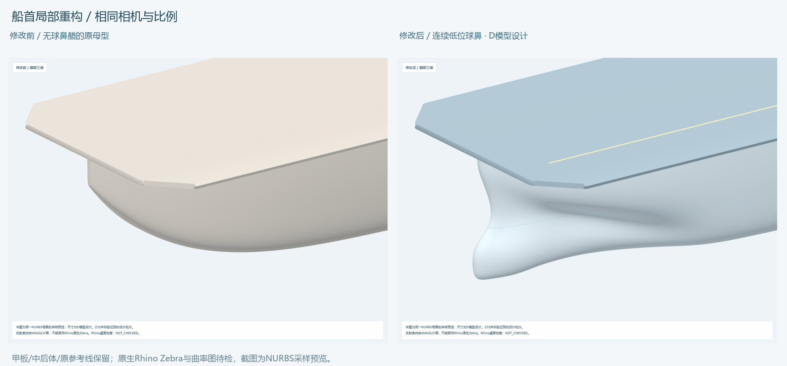
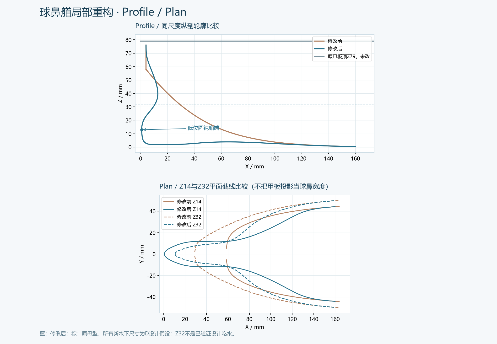
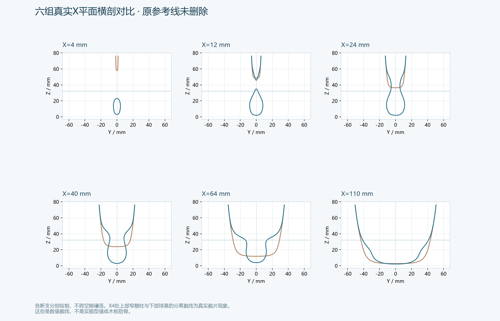
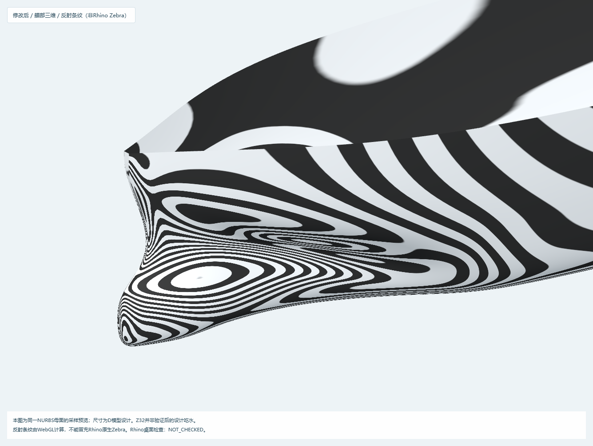
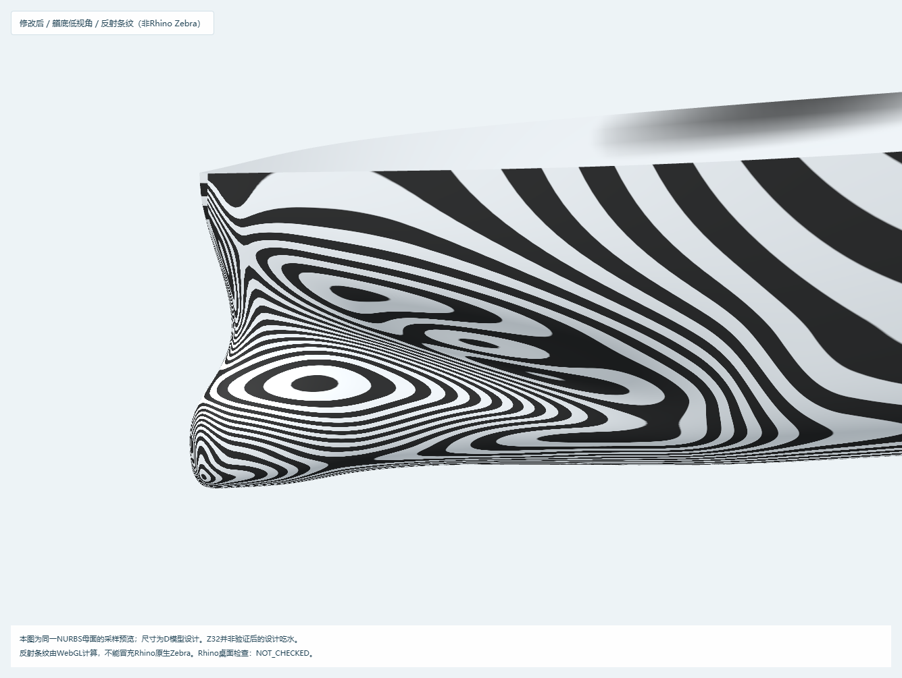
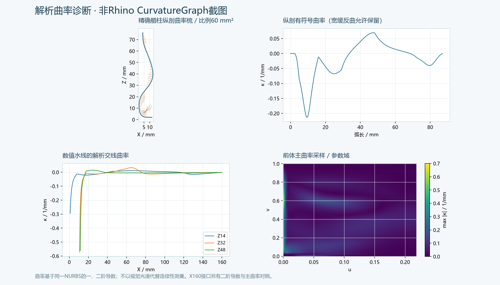

本版完成局部NURBS候选几何、保存回读、数值连续性和可视化。原生Rhino Zebra、CurvatureGraph、Join/ShowEdges与完整自交检查尚未执行；本机未找到Rhino应用/窗口。没有给出“工程制造验收通过”或“076水下艏形已确认”的结论。
输入为已交付的02_Hull_Outer_V1.3dm，毫米单位，X0艏/X800艉，Y0中心线，Z0基线。源模型含左右独立母面、艏艉参考端封、数学ST/WL、甲板和双岛体块；原船首下部向后上收，没有球鼻。现有主要参考WL为Z32，不是已验证设计吃水；不存在可直接读取的真实T。
原始文件逐字节备份在backup/hull_before_bulb.3dm，源SHA记录在input_audit.json。未覆盖前一轮模型或评审包。所选实船照片可以约束上部外观，水面遮挡下部，不能据此恢复076球鼻艏型值。076真实球鼻艏仍为Unknown；本次新形状全部为D模型设计。
只改变X≤160 mm前体。插入6个局部控制站，按截面控制网构造左右各一张13×10三次NURBS前体；末三行控制点约束原面位置、一阶和二阶导数。中后体由原母面精确分割取得，不重新拟合。没有Sphere、Ellipsoid、布尔粘球、Patch或网格替代面。
原甲板形状和高度保留；上缘与原母面吻合。水下艏柱低位前伸、圆钝收头，横剖面由小圆钝截片发展为带颈部的椭圆/梨形，再回到原前体。新增上部窄艏柱封条只闭合原有窄艏柱区域，不是独立球鼻实体。上部窄艏柱棱线和甲板边缘继续作为明确转角，不宣称全船G2。
艏底UV角设置局部平面邻域；该角仍是退化参数点，其几何法向有平面极限。独立复核发现的底缝12.637°折脊已经通过整段纯横向切向约束修复，并新增了先失败、修复后通过的回归检查。
| 参数 | 工作值/mm | 依据与含义 |
|---|---|---|
| BulbLength | 100 | D，球鼻形态影响长度控制；不是向艏前加长100 mm |
| BulbHeight | 24 | D，名义下部体量高度控制，约为Z32参考深度的75% |
| BulbWidth | 24 | D，局部体量宽度控制，约为上部船体126 mm的19% |
| BulbCenterBelowWL | 18 | D，名义中心Z14，名义上下界Z2–26，位于参考WL以下 |
| BulbMaxWidthPosition | 32 | D，宽度控制分布的名义峰值站；不等同最终曲面最大宽位置 |
| BulbMaxHeightPosition | 40 | D，厚度形态工作控制站；不宣称曲面厚度极值被精确锁在X40 |
| 局部控制站 | 12/24/40/64/96/128 | D，局部加密，不是木板肋位 |
| 融合结束X | 160 | D，限制在总长20%以内 |
| 原甲板顶高 | 79 | 原几何未改 |
| 成品最大长度 | 800 | 用户约束，包含球鼻，未向X0之外伸出 |
控制参数与曲面实测值分开。曲面艏端最小X点约为 (0.7928, 0, 12.9563) mm，低于参考WL约19.044 mm，相对参考WL处艏柱前伸约9.911 mm。球鼻主体与原前体连续，没有单独部件边界可用来把名义长/宽/高冒充精确极值。参数源见bulb_parameters.json及参数表CSV。
| 检查 | 当前结果 | 证据边界 |
|---|---|---|
| X160接口G0 | 位置最大差5.68e-14 mm | 同一参数下的解析/数值检查 |
| X160接口切向 | 法向最大差2.22e-13° | 位置及切向匹配 |
| X160接口二阶 | 二阶偏导最大差1.12e-09 | 参数导数，不是形状误差mm；支持该接口C2/G2 |
| X160接口主曲率 | 最大差4.74e-16 /mm | 不能外推为所有棱边G2 |
| 艏底左右接缝 | 2001点法向差≤3.18e-11°，主曲率差为数值零 | 底部折脊已修复 |
| 水下艏柱左右接缝 | 1001点法向及主曲率匹配 | 只限参考WL以下，不包括上部窄艏柱棱线 |
| 中后体保持 | 采样坐标最大差1.42e-13 mm | 原面精确子面，没有中后体改形 |
| 保存原生面与数学采样 | 5面各31×51点，最大坐标差2.27e-13 mm | 真正回读保存后的3dm，不是只检查内存 |
| 参考曲线 | 原GUID、名称与曲线序列化数据均保留 | 原曲线未被重建或删除 |
| 原生几何 | 98对象，13 Brep、5 Extrusion、零Mesh | 含59个源对象；3个旧外形面隐藏保留 |
| 曲率采样 | 72900点，内部Jacobian非零 | 局部高曲率位于上部窄艏柱附近；不把采样当完整自交证明 |
| 整体闭合/裸边 | 未组成闭合水密壳体 | 6个独立单面外壳Brep合计180条边界边；包括原横艉细分边界，重合不等于Join |
| 完整自交检查 | NOT_CHECKED | 已做内域正则、坐标单调与截片检查；未执行原生Brep完整自交测试 |
| 原生Zebra/CurvatureGraph | NOT_CHECKED | 提供WebGL反射条纹和解析曲率图，文件名明确区分 |
数值误差仅说明同一候选几何的计算一致性，不代表实舰精度、实际木板配合或流体性能。曲率图保留球鼻—颈部过渡所需的宽缓反曲；不以曲率全平作为目标。详细记录见geometry_validation.json、geometry_tests.txt及saved_native_sampling.json。
| 请求项 | 输出 |
|---|---|
| 修改前/后船首 | 01修改前、02修改后、同相机比较 |
| Profile与Plan | 同尺度对比；另有独立侧视/俯视截图 |
| 关键横剖面 | 六组对比，X4/12/24/40/64/110，另存X160接口线 |
| 条纹检查图 | 反射条纹、艏底条纹；均非Rhino原生Zebra |
| 曲率检查图 | 解析曲率图；非Rhino CurvatureGraph截图 |
| 修改的曲线 | changed_curves.json：原曲线全保留；新增32条数值ST/WL样线与2条精确母面轮廓 |
| 修改的曲面 | changed_surfaces.json：左右前体新面、左右原后体精确子面、上部窄艏柱封条 |
| 对称与保留项 | Y0对称；甲板、中后体、原参考曲线保留；原件SHA与备份一致 |
新采样ST/WL为观察用数值截片，不是新的实舰型值或切割线。分离截片不跨空隙强连：例如X4切到下部球鼻与上部窄艏柱时，本来就可能出现分离支路。
打开hull_bulbous_bow_v1.3dm，使用Shaded/Rendered；恢复Bow_Close_3D、Bow_Profile、Bow_Plan命名视图。旧面在BOW_REBUILD_ORIGINAL_FROZEN层隐藏保留，新参考线层默认隐藏。
Rhino_native_QA.py仅供Rhino内运行，本环境未运行、未实测。它在内存副本尝试Join并记录裸边，不改保存文档。随后需在Rhino实际运行Zebra、CurvatureGraph、ShowEdges并保存原生截图；有缺口、自交或条纹突变时继续调整，不能据本包直接宣布最终工程验收通过。
重建需要预装source/requirements.txt依赖，依次运行build_bow.py、make_viewer.py、test_bow.py、analyze_bow.py。verify_viewer.py额外需要Playwright和本机Edge；package_bow.py在检查记录齐全后重新生成报告与ZIP。离线网页不需要Python。源码含本包内的原始母型数据与浏览库，不读取前一轮外部交付目录。
方法参考：McNeel连续性数学说明、Rhino Zebra说明、Brep.JoinBreps。原照片来自Naval News海试图集，其水下遮挡范围不能作为球鼻尺寸依据。